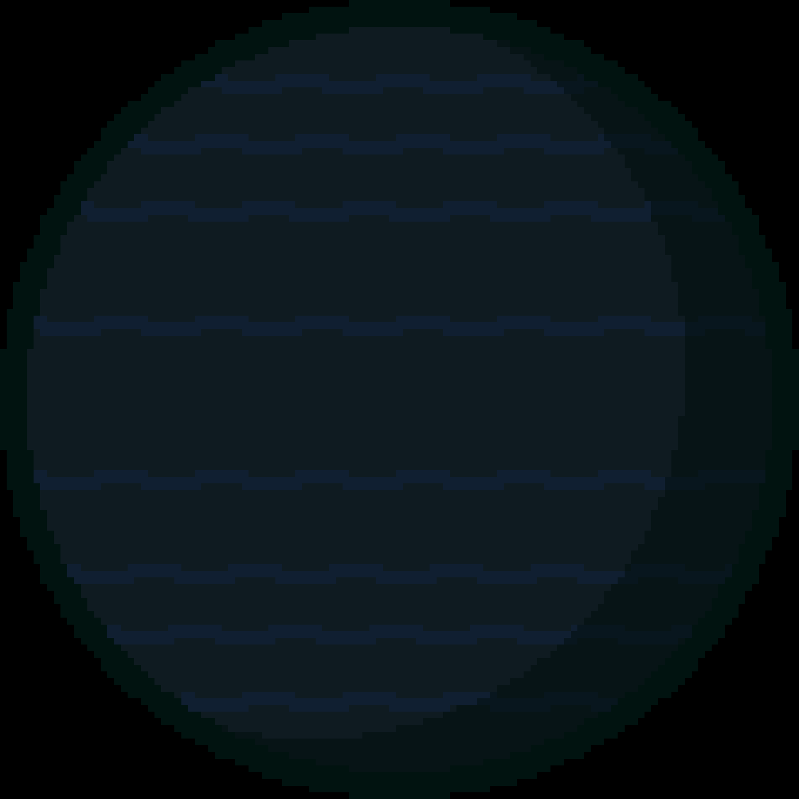

TrES-2 b har en massa som är cirka 50% större än Jupiter. TrES-2 b var först upptäckt 2006 och den ligger 702 ljusår från jorden. Den ligger ungefär 0,04 AU från dess stjärna. Det borde betyda att planeten är väldigt ljusstark, men det är den inte. TrES-2 b reflekterar mindre än 1% av ljuset som träffar den. Kol reflekterar mer ljus än denna planet. Den avger faktiskt ett mörkrött ljus vilket kan vara på grund av dess temperatur (1610°C).